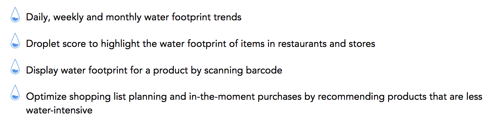
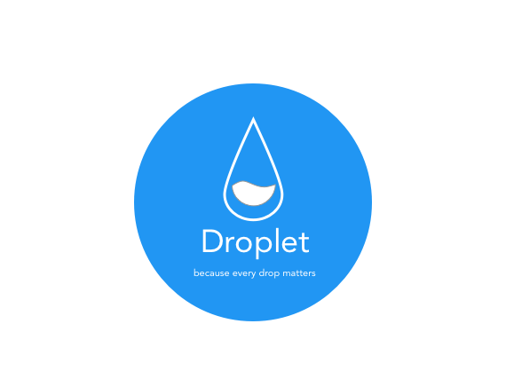

Traquilo
a personal informatics mobile app to measure mood and monitor mental health and well-being
- Project Type: Individual
- Duration: April 2018 — May 2018
- My Role: UX Designer, UX Researcher, Product Manager
- Target Audience: people who are looking to track their mood and understand what might be causing changes in it
Summary
There is research which suggests that our constant exposure to social media these days impacts our moods. This is not just found in adults but children too as referenced in the article. Given these variations in mood, I feel that it is important that people pay more attention to their moods and the impact this has on their emotions on a day-to-day basis.
Enter Tranquilo - a mobile app that helps users measure their moods throughout the day and, in the long-term, seeks to help users gain more control over their moods and how they react to situations.
Product Mission
Tranquilo seeks to make users cognizant of their mood
over the day and through that exercise more control over their reactions to external stimuli
Process
The inspiration for this product came up as an assignment for one of my courses in grad school. The aim of the assignment was to find something that students were not currently tracking or measuring and then coming up with a solution for the same. I've always wanted to measure mood, specifically my reactions to external stimuli and how they affect me, short-term and long-term.
Brainstorming

As I thought of ideas that I would use to measure mood, I came up with three ideas:
- Oral measurement: in this method, the user would speak out their emotions to the app using their mobile phone when asked to by the app. The app would keep track of their mood by asking them to record their moods at various times of the day. Users will then be able to view their responses at the end of the day to see how their moods have changed over the course of the day.
- Written measurement: in this method, the user would write out their emotions to the app in the form of an online diary entry. The app, using sentiment analysis would figure out how the user's moods would change over time and provide feedback to the user about their moods.
- Wearable device: in this method, the user straps on a wearable device on their arm (kind of like a wrist-watch), that measures their pulse and detects any anomalies such as sudden panic or euphoria. This is then displayed to the user at the end of the day so that they can observe their behavior.
User interviews
In order to figure out the best way of going forward, I decided to talk to potential users and ask them how they felt about these ideas. The persons I contacted for interview requests were students and faculty at the University of Michigan. I also spoke to some others such as family members and friends who were not in academics so that I get feedback from people of different backgrounds. Many users liked the idea of a journal or diary entry as they did used to maintain these when they were younger. However, the effort to write a diary entry every day that required them to recollect every incident during the day appeared tedious. Users also expressed some hesitation in speaking out to the phone (oral measurement) in public talking about what they are going through and voicing personal concerns into a device.
Users were very interested in the idea of a wearable. They felt that it would help them achieve what they wanted and yet not in a manner that seemed too conspicuous. They were insistent that the wearable should not prompt them too often asking them how they were feeling and should be able to recognize normal changes in pulse or heart rate such as when one is exercising.
Interviewee Quote
"That sounds great. Wearables are in right now and it would
be interesting in using one that helps me monitor. However, I don't want it to ask me what's wrong when I'm in the middle of
a workout!"
Concept Sketching
The project itself aims at being a personal informatics application. Drawing upon theories of personal informatics design such as Norm Activation and “The Rider and the Elephant” (Haidt, 2006), Droplet encourages and enables users to make better in-the-moment behavior changes.
Design Decsions

On-demand water footprint score
The app allows users to scan an item's barcode and receive information about the item's water footprint instantaneously. This information is sourced from the app's database which contains an extensive collection of water footprints of various commonly purchased products. Droplet also displays less water-intensive alternatives for purchase.
Encouragement
One of the covenants of Personal Informatics Design is the need to offer encouragement to the user. A major challenge facing designers today is the 28-day problem — the fact that many users do not continue using apps beyond 28 days. In order to keep the user interested, we sought to show the user just how far they have come in their journey towards improving their water footprint. We did this in a simple manner — through words of encouragement and comparing a numerical value into normal terms such as the amount of water needed for a routine task like showering.
Self-reporting at the supermarket or restaurant
Droplet allows users to self report their water footprint while on a trip to the grocery store or while getting takeout at a restaurant through the app’s virtual shopping cart.
Final Product Video
And with these designs, we formally present to you:
